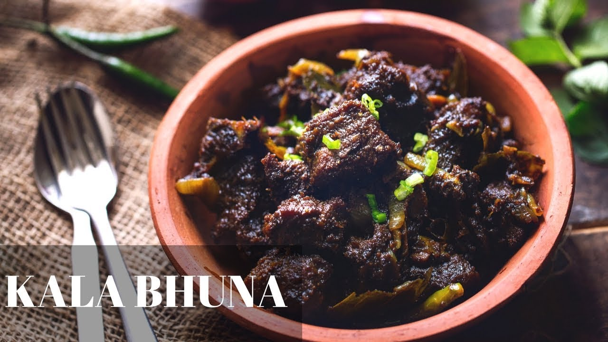

Beef Kala Bhuna

Kala Bhuna is a type of Bangladeshi cuisine usually made from beef that has been roasted and then cooked in various spices.These meats are roasted until they are a deep black color and then cooked with spices such as cumin, chili powder, and turmeric. Kala Bhuna is a flavorful dish perfect for those who enjoy a spicy meal.
Ingredients for Kala Bhuna / Vuna masala powder:
- Roasted cumin 1 tsp
- Nutmeg 1/4
- Mace 2 pcs
- Cloves 6 pcs
- Black pepper 1 tsp
- Green cardamom 3 pcs
- Black cardamom 3 pcs
- Star anise 2 pcs
- Cinnamon 3 pcs
- Yellow mustard seeds 1 tsp
Ingredients for Kala Bhuna:
- Beef 1 kg
- Sour curd 2 tbsp
- Oil 3 tbsp
- Sliced onion 1/2 cup
- Fried onion 1/2 cup
- Red chili powder 1 tsp
- Turmeric powder 1/2 tsp
- Coriander powder 1 tsp
- Garlic ginger paste 1 tbsp
- Cumin paste 1 tbsp.
- Green chili 4 pcs
- Dark soy sauce 2 tbsp (optional)
- Mace 1 pc
- Cinnamon 2 pcs
- Green Cardamom 3 pcs
- Black cardamom 3 pcs
- Star anise 1 pcs
- Black pepper 6 pcs
- Bay leaves 2 pcs
- Sugar 1tsp
- Salt to taste
- Hot water is required
Ingredients for Tarka:
- Mustard oil 1 tbsp
- Garlic chopped 1 tbsp
- Dry chili 4 to 5 pcs
Ingredients for garnishing:
- kala vuna masala mix 1 tsp
- Fried onion 1 tbsp
- Green chili 2 pcs
Here is the process of cooking this dish:
- Add the ingredient mentioned above for Kalo Vuna powder in a blender jar. Grind the spices very well and make a fine Kalo Vuna powder.
- Place it in an air-tight glass jar, and you can easily store it for 1 month.
- Take a deep pan or wok add washed beef prices, Sour curd, oil, onion slice, fried onion, red chili powder, turmeric powder, coriander powder, ginger-garlic paste, cumin paste, green chili, dark soy sauce, Mace, Cinnamon, Green Cardamom, Black cardamom, Star anise, Black pepper, Bay leaves, Sugar and salt.
- Mix them well by hand, So that the spices mix well with the beef.
- Now, place the wok on a stove on medium-high heat and stir it for a minute. After mixing, cover the wok and cook it for 15 to 20 minutes on medium-low heat.
- Then uncover the wok and stir the meat for a minute and cook it for 10 to 15 minutes on medium-high heat and keep stirring in intervals.
- Now add hot water and again cover the wok and cook the meat until the beef cook 95%
- Then add Tarka (in another pan, add mustard oil, garlic, and dry chili. Cook for 2 minutes. Your Tarka is ready) and cook it until all water reduces and the beef becomes soft and tender.
- Now add Kala Bhuna masala, green chili, and fried onion. Mix them and cook them for the last 2 minutes.
- Your Kala Bhuna is ready to eat. The server is with a Rice, Roti, or Paratha. It goes well with any side dish.